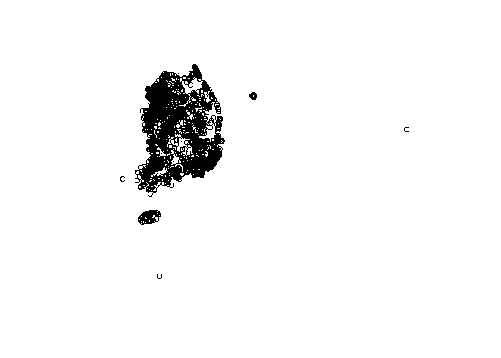
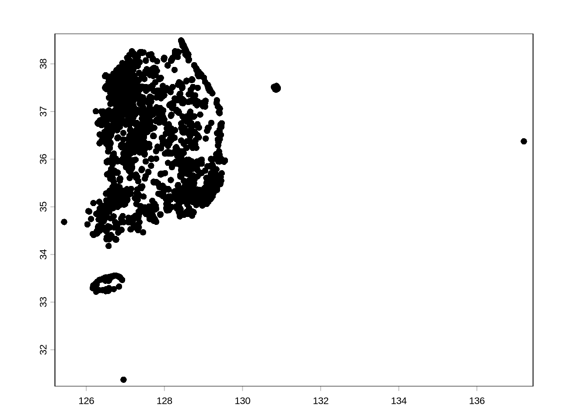

library(yaml)
library(tidyverse)
library(data.table)
library(sf)
library(terra)
library(tmap)
library(leafem)This is the first post in a Quarto blog. Welcome!

See: https://github.com/quarto-dev/quarto-actions/blob/main/examples/example-03-dependencies.md
Tidyverse
read_csv("./data/SVI_2000_US.csv")Rows: 65081 Columns: 82
── Column specification ────────────────────────────────────────────────────────
Delimiter: ","
chr (9): STATE_FIPS, CNTY_FIPS, STCOFIPS, TRACT, FIPS, STATE_NAME, STATE_AB...
dbl (73): G1V1R, G1V2R, G1V3R, G1V4R, G2V1R, G2V2R, G2V3R, G2V4R, G3V1R, G3V...
ℹ Use `spec()` to retrieve the full column specification for this data.
ℹ Specify the column types or set `show_col_types = FALSE` to quiet this message.# A tibble: 65,081 × 82
STATE_FIPS CNTY_FIPS STCOFIPS TRACT FIPS STATE_NAME STATE_ABBR COUNTY G1V1R
<chr> <chr> <chr> <chr> <chr> <chr> <chr> <chr> <dbl>
1 01 001 01001 0201… 0100… Alabama AL Autau… 0.127
2 01 001 01001 0202… 0100… Alabama AL Autau… 0.227
3 01 001 01001 0203… 0100… Alabama AL Autau… 0.0766
4 01 001 01001 0204… 0100… Alabama AL Autau… 0.0454
5 01 001 01001 0205… 0100… Alabama AL Autau… 0.0367
6 01 001 01001 0206… 0100… Alabama AL Autau… 0.152
7 01 001 01001 0207… 0100… Alabama AL Autau… 0.11
8 01 001 01001 0208… 0100… Alabama AL Autau… 0.0844
9 01 001 01001 0209… 0100… Alabama AL Autau… 0.138
10 01 001 01001 0210… 0100… Alabama AL Autau… 0.176
# ℹ 65,071 more rows
# ℹ 73 more variables: G1V2R <dbl>, G1V3R <dbl>, G1V4R <dbl>, G2V1R <dbl>,
# G2V2R <dbl>, G2V3R <dbl>, G2V4R <dbl>, G3V1R <dbl>, G3V2R <dbl>,
# G4V1R <dbl>, G4V2R <dbl>, G4V3R <dbl>, G4V4R <dbl>, G4V5R <dbl>,
# USG1V1P <dbl>, USG1V2P <dbl>, USG1V3P <dbl>, USG1V4P <dbl>, USG1TP <dbl>,
# USG2V1P <dbl>, USG2V2P <dbl>, USG2V3P <dbl>, USG2V4P <dbl>, USG2TP <dbl>,
# USG3V1P <dbl>, USG3V2P <dbl>, USG3TP <dbl>, USG4V1P <dbl>, USG4V2P <dbl>, …data.table
fread("./data/SVI_2000_US.csv") |> head() STATE_FIPS CNTY_FIPS STCOFIPS TRACT FIPS STATE_NAME STATE_ABBR COUNTY
<int> <int> <int> <int> <i64> <char> <char> <char>
1: 1 1 1001 20100 1001020100 Alabama AL Autauga
2: 1 1 1001 20200 1001020200 Alabama AL Autauga
3: 1 1 1001 20300 1001020300 Alabama AL Autauga
4: 1 1 1001 20400 1001020400 Alabama AL Autauga
5: 1 1 1001 20500 1001020500 Alabama AL Autauga
6: 1 1 1001 20600 1001020600 Alabama AL Autauga
G1V1R G1V2R G1V3R G1V4R G2V1R G2V2R G2V3R G2V4R G3V1R G3V2R G4V1R
<num> <num> <num> <num> <num> <num> <num> <num> <num> <num> <num>
1: 0.1268 0.0527 17771 0.1841 0.0782 0.2783 0.2032 0.1018 0.0447 0.0000 0.0000
2: 0.2270 0.0997 14217 0.3249 0.1215 0.2735 0.3466 0.1176 0.6691 0.0045 0.0092
3: 0.0766 0.0288 18346 0.1699 0.1338 0.2890 0.1902 0.1130 0.1794 0.0056 0.0317
4: 0.0454 0.0351 19741 0.1341 0.1510 0.2500 0.1842 0.0560 0.0621 0.0000 0.0310
5: 0.0367 0.0166 24510 0.0863 0.0682 0.3079 0.1193 0.0654 0.1121 0.0059 0.0246
6: 0.1521 0.0550 16395 0.2386 0.0938 0.3034 0.2214 0.1101 0.2078 0.0185 0.0000
G4V2R G4V3R G4V4R G4V5R USG1V1P USG1V2P USG1V3P USG1V4P USG1TP USG2V1P
<num> <num> <num> <num> <num> <num> <num> <num> <num> <num>
1: 0.2075 0.0090 0.0409 0.0389 0.604 0.541 0.566 0.518 0.591 0.214
2: 0.0198 0.0544 0.0705 0.0140 0.829 0.837 0.790 0.814 0.904 0.495
3: 0.0143 0.0141 0.0582 0.0270 0.390 0.211 0.533 0.473 0.367 0.580
4: 0.0492 0.0181 0.0301 0.0040 0.209 0.306 0.452 0.355 0.264 0.687
5: 0.0070 0.0182 0.0241 0.0000 0.153 0.061 0.258 0.194 0.067 0.162
6: 0.3373 0.0182 0.0571 0.0000 0.682 0.566 0.658 0.659 0.706 0.306
USG2V2P USG2V3P USG2V4P USG2TP USG3V1P USG3V2P USG3TP USG4V1P USG4V2P
<num> <num> <num> <num> <num> <num> <num> <num> <num>
1: 0.675 0.547 0.754 0.609 0.169 0.000 0.000 0.000 0.872
2: 0.641 0.971 0.850 0.935 0.828 0.061 0.375 0.332 0.592
3: 0.739 0.473 0.820 0.818 0.488 0.072 0.142 0.477 0.571
4: 0.456 0.439 0.315 0.440 0.233 0.000 0.002 0.474 0.662
5: 0.829 0.119 0.421 0.236 0.370 0.081 0.078 0.441 0.512
6: 0.811 0.644 0.811 0.802 0.527 0.289 0.344 0.000 0.954
USG4V3P USG4V4P USG4V5P USG4TP USTP USG1V1F USG1V2F USG1V3F USG1V4F USG1TF
<num> <num> <num> <num> <num> <num> <num> <num> <num> <num>
1: 0.048 0.316 0.945 0.574 0.450 0 0 0 0 0
2: 0.421 0.532 0.846 0.782 0.854 0 0 0 0 0
3: 0.070 0.454 0.879 0.682 0.522 0 0 0 0 0
4: 0.107 0.215 0.000 0.280 0.183 0 0 0 0 0
5: 0.109 0.159 0.000 0.206 0.078 0 0 0 0 0
6: 0.109 0.446 0.000 0.302 0.557 0 0 0 0 0
USG2V1F USG2V2F USG2V3F USG2V4F USG2TF USG3V1F USG3V2F USG3TF USG4V1F
<num> <num> <num> <num> <num> <num> <num> <num> <num>
1: 0 0 0 0 0 0 0 0 0
2: 0 0 1 0 1 0 0 0 0
3: 0 0 0 0 0 0 0 0 0
4: 0 0 0 0 0 0 0 0 0
5: 0 0 0 0 0 0 0 0 0
6: 0 0 0 0 0 0 0 0 0
USG4V2F USG4V3F USG4V4F USG4V5F USG4TF USTF Totpop2000 Totalhu G1V1N G1V2N
<num> <num> <num> <num> <num> <num> <num> <num> <num> <num>
1: 0 0 0 1 1 1 1879 742 227 46
2: 0 0 0 0 0 1 1934 758 433 80
3: 0 0 0 0 0 0 3339 1263 250 42
4: 0 0 0 0 0 0 4556 1871 207 77
5: 0 0 0 0 0 0 6040 2277 222 49
6: 1 0 0 0 1 1 3378 1352 514 90
G1V4N G2V1N G2V2N G2V3N G2V4N G3V1N G3V2N G4V1N G4V2N G4V3N G4V4N G4V5N
<num> <num> <num> <num> <num> <num> <num> <num> <num> <num> <num> <num>
1: 226 147 523 339 73 84 0 0 154 6 27 73
2: 376 235 529 603 74 1294 8 7 15 37 48 27
3: 362 447 965 549 136 599 17 40 18 17 70 90
4: 412 688 1139 777 98 283 0 58 92 32 53 18
5: 326 412 1860 644 143 677 33 56 16 40 53 0
6: 487 317 1025 689 132 702 58 0 456 22 69 0
Shape Shape.STArea() Shape.STLength()
<char> <num> <num>
1: (-86.49001754505039, 32.47712149572407) 0.0009407913 0.15003547
2: (-86.47336703419953, 32.47430466837865) 0.0003177997 0.09226531
3: (-86.4602033958281, 32.47548170589444) 0.0005147620 0.10013704
4: (-86.44371817489963, 32.47198623491002) 0.0006099415 0.11676753
5: (-86.42267086235849, 32.45886190833748) 0.0011041460 0.16854121
6: (-86.47834504936274, 32.44206725458296) 0.0007950631 0.16149683Simple Features
read_sf("./data/test.gpkg") |> st_geometry() |> plot()
Terra
vect("./data/test.gpkg") |> plot()
Themetic Map(tmap) & leafem
tmap_mode("view")ℹ tmap modes "plot" - "view"
ℹ toggle with `tmap::ttm()`park_list <- read_sf("./data/test.gpkg") %>%
filter(grepl("서울",소재지지번주소)) %>%
select(공원명,소재지지번주소)
{
tm_basemap("OpenStreetMap.HOT", group = "Open Street Map - HOT")+
tm_basemap("https://mt1.google.com/vt/lyrs=y&hl=en&z={z}&x={x}&y={y}", group = "Google Satellite Imagery w/ label")+
tm_basemap("https://mt1.google.com/vt/lyrs=s&hl=en&z={z}&x={x}&y={y}", group = "Google Satellite Imagery wo/ label")+
tm_shape(park_list) +
tm_dots(size=.5,
fill = "red",
id="공원명") -> themap
tmap_leaflet(themap)|>
addMouseCoordinates()
}Registered S3 method overwritten by 'jsonify':
method from
print.json jsonlite